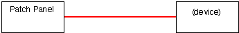

|
|
www.conserver.com |
|
|
www.conserver.com |
This document will outline terminal server connections to Chase Research IOLAN Rack+ terminal servers. The connections will likely extend to many of the IOLAN series products, but I have not confirmed this. Compare the RJ-45 port signaling shown below in this document with the signaling information in the product documentation for your device. (I have tested with the Chase Research 16-port version, as well as the Perle Systems 4-port version.)
Table of Contents
IOLAN RJ-45 signaling
RJ-45 Cable Diagrams
Making a null modem cable
Cisco devices with female RJ-45 ports
Connecting IOLAN RJ-45 to DB-9
Connecting IOLAN RJ-45 to DB-25
RJ-45 adapter Information
Specialty Cables
(USR, Sun,
DEC)
Attaching devices to a PC instead
Author Credits
|
Our initial testing was done with the Chase Research IOLAN Rack+ 16-port model. We found that this unit will send Serial BREAK to the attached devices on power-off. (You can find out more about this on our serial BREAK testing page.) At the USENIX LISA 2000 conference, I spoke with folks from ASP Technologies, and they told me that a small (4-port) desktop IOLAN unit does not send serial BREAK at inappropriate times, so we tried to follow up with Chase to find out more information. We found that the IOLAN line now belonged to Perle Systems. Perle Systems bought the IOLAN product line from Chase Research, and they continue to sell the IOLAN products. However, the IOLAN series may send Serial BREAK when power is disconencted. (Basically, if the unit uses an AC power cord, the unit will send Serial BREAK to all of the attached serial devices when AC power is removed. The (smaller, 4- and 8-port) units, with an external DC power pack will NOT send Serial BREAK at inappropriate times.
Notes:
The reference ground, and data signals, are located on the center pairs of the RJ-45, so you can use a straight-through RJ-11 cable for simple, data-only connections. (However, you should not use RJ-11 or RJ-12 connectors in your RJ-45 jacks for longer than quick tests, as these smaller connectors will tend to bend the outer RJ-45 pins up, and this can lead to intermittent or open connections on the RJ-45 jack later on, affecting the hardware flow control and hardware handshaking leads.) The IOLAN signals are not symmetrical, so you cannot use USOC-rolled cables to create a null-modem connection. Crossover Ethernet cables will not help you either. |
|
The best way to make a connection between IOLAN console server ports and adapters is to use an 8-wire 'straight through' Ethernet cable. (Using a Crossover Ethernet cable or CDDI cables (also referred to as 'USOC-rolled' cables) will not work for connecting adapters to the IOLAN ports.)
Standard Ethernet cables follow a specific wiring pattern. However, not ALL ethernet cables have 8 wires in the cable, since a standard Ethernet interface only uses 4 of the wires. For console connections, you need to make sure that your cables have all 8 wires, wired 'straight through' (as shown to the left) for your connections. |
|
The four charts below show you how to use adapters to make a Null Modem, using standard ethernet cables to provide the appropriate lengths. (Always match vendor-compatible parts! Connect IOLAN-schema adapters with Xyplex-schema, MOD-TAP with MOD-TAP, etc. Your connection will not work if you mix different vendors wiring schema.) 
You can also use the 'straight-through' cables shown in the tables above to allow you to insert an RS-232 passive signal tracer or a breakout-box in-line between the RJ-45 devices, so that you can monitor the signal states on the various leads, as a troubleshooting aid. |
|
 The Cisco RJ-45 console is wired differently from the IOLAN RJ-45, so you will need a specialty cable to connect all of the signal leads properly. The Cisco-wired patch panel from APA Cables and Networks (APACN) are wired the null-modem opposite from the Cisco console ports, so you will need a separate specialty cable to connect the IOLAN to a Cisco-wired patch panel.
There are a few Cisco devices that have RJ-45 consoles that are wired the null-modem opposite from the Cisco wiring standard. The three devices listed below were (I believe) Catalyst products. They are also listed on the IOLAN Host-to-Adapters Page, with information about which cable to use. (The RJ-45 console on these devices appears to be a Cisco patch panel, and not a Cisco console port.)
|
|
The IOLAN console server is rare in one way; it has a distinct lead for the DCD signal. As a result, there are only four DB-9 to RJ-45 adapters available from APA Cables and Networks (where other terminal servers require eight);
Rather than list all of the devices you might be able to connect to with each adapter here, I have created a separate IOLAN Host-to-Adapters Page, which lists the various combinations of male and female, DTE/DCE, DB-9 and DB-25, with a list of the various devices which fall under each connector type. The list also tells you which adapter (or cable) you will need to connect each device to an IOLAN console server port. Note: Some Cisco 1900-series switches use a DB-9 console connection, instead of the RJ-45 connector. Some of these devices require a DCD signal on DB-9 pin 1, while other versions of the 1900 do not want a DCD signal applied to DB-9 pin 1.
APACN sells any of these adapters (individual or bulk), as well as a complete adapter/cable set. |
|
The IOLAN console server is rare in one way; it has a distinct input lead for the DCD signal. This makes connecting to modems a breeze.
Rather than list all of the devices you might be able to connect to with each adapter here, I have created a separate IOLAN Host-to-Adapters Page, which lists the various combinations of male and female, DTE/DCE, DB-9 and DB-25, with a list of the various devices which fall under each connector type. The list also tells you which adapter (or cable) you will need to connect each device to an IOLAN console server port. APACN sells any of these adapters (individual or bulk), as well as a complete adapter/cable set. |
|
I am a strong proponent of buying pre-wired, pre-labeled adapters and cables. Generally speaking, you probably can't build an adapter cheaper, if you consider the value of your time as well as the component costs. And, whether or not I can make 100 adapters without a mistake isn't being questioned, I'm sure I'd rather not make 100 by myself. The best advantages for buying pre-built adapters and pre-wired cables include;
You can purchase any of the adapters and cables listed on these pages individually (or in bulk) from APA Cables & Networks (www.apacn.com). You also have the option of buying a IOLAN Console Kit, which includes a complete set of adapters, and some of the specialty cables listed above, as well as a passive RS-232 Signal Tracer. The default shell color is green for IOLAN adapters. You can get the shells in another color if you want, provided you want one of the colors listed below: Available colors: BK = black, GN = green, RD = red, YL = yellow, BL = blue, GY = grey So, the APACN part number IFDTE91-YL would denote the DB-9 female DTE adapter, wired for the IOLAN RJ-45 format, but supplied with a yellow plastic shell (instead of the default green shell). APA Cables & Networks also sells adapters and adapter kits for other RJ-45 schema, including the Annex/Bay/Nortel, Xyplex/iTouch/MRV and Cisco console server families. APA Cables & Networks uses different default colors to make it easier to visually identify the different RJ-45 wiring schema. With all of this said, I also understand that sometimes you just need to make that one cable or adapter, and buying just one isn't practical. So, here are the schematics. (The APA Cables & Networks part number is shown below each adapter. If there is a IOLAN equivalent, I'll note the IOLAN part number as well.)
|
|
As with adapters, I recommend buying pre-built, pre-labeled, tested cables. APA Cables and Networks sells specialty cables for connecting IOLAN consoles ports to other console servers and devices, and these can be ordered from the descriptions and part numbers shown below. The default length is 7 feet, but you can order custom lengths as needed. The cables come with black boots on the RJ-45 end, and labels denoting the IOLAN end. The MMJ end does not get a boot, since they can't find anyone who makes a colored MMJ boot.
There are other cables listed on the IOLAN Adapter Kit Page. |
|
U.S. Robotics (USR, now 3-Com) digital modem chassis have a different pinouts than Cisco on the console ports on their NICs and NACs. You can accommodate these devices by combining a IFDTE adapter with a USR cable (part number 1.009.691-B) attached to the USR console port, and an ethernet cable to connect the IFDTE adapter to the Xyplex port.  You can also make a single cable, with RJ-45 male connectors on each end. Make sure that you label both ends of the cable, since the wiring is not symmetrical (it makes a difference which end plugs into the IOLAN port!) APA Cables and Networks sells a cable for this (black boot on the IOLAN end, orange boot on the USR end);
There are more cables listed on the IOLAN Host-to-Adapters Page. |
|
Most Sun hardware has used a female DB-25 connector for the TTY A and B ports. (Use a IMDCE adapter to connect these to an IOLAN console server port.) The Sun Netra T-1 (model 105) uses an RJ-45 console, and it happens to be wired identically to the Cisco console port.
The DB-25 serial adapter that comes with the Sun Netra T-1 (Sun p/n 530-2889-02) is wired similarly to the Cisco part 29-0808-01, (APACN CMDCE adapter, with the addition of adding a 'frame ground' connection. The plastic DB-25 shell has a metalized coating, and a drain ground lead is attached from pin 1 of the DB-25(m) connector to a lead attached to the metalized shell. The schematic on the Sun p/n 530-2889-03 is similar, except they changed the colors of the wires inside the shell (and the tabs which hold the DB-25 connector are much more fragile, so take my word on the wiring inside!) To connect the IOLAN to a Sun Netra, use the IOLAN-to-Cisco console cable. The Sun Netra T-3 disk arrays use an RJ-13 connector for it's RS-232 console, and you only get data and ground for your connection (no flow control or handshaking). APA Cables and Networks sells a couple of cables for connecting these devices (black boot on the IOLAN end, no boot on the RJ-13 end);
There are more cables listed on the IOLAN Host-to-Adapters Page. |
|
Digital Equipment Corp. (DEC, then Compaq, then H.P.) equipment often used an RJ-13 with an offset locking tab, referred to as a Modified Modular jack (MMJ). This included their VT-series terminals, VAX equipment, and even newer Alpha series equipment. APA Cables and Networks sells a cable for this (black boot on the Xyplex end, and no boot on the DEC end);
There are other cables listed on the IOLAN Host-to-Adapters Page. |
|
|
|
Tips for configuring the serial ports on terminal servers for remote access to attached serial devices.
If you are connecting your network equipment consoles to your console server, remember to consider;
|
|
|
|
NOTICE: Most of the pages, articles, and tutorials on this website are copyrighted works. You may make 'deep links' to various pages. (If you let me know which page(s) you are linking to, I'll let you know if I move the page(s) during updates.) Please send me email if you wish to republish any material, or use it on your own website. |